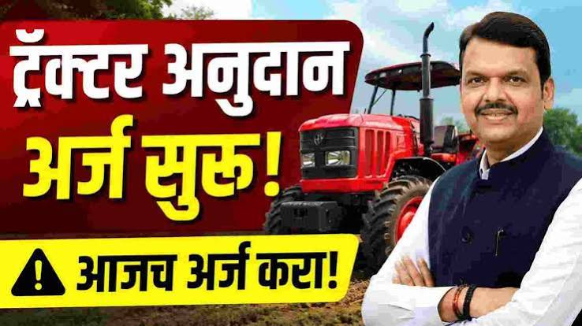

महाडीबीटी: ट्रॅक्टर आणि कृषी अवजारे अनुदान

शेतकऱ्यांचे उत्पन्न वाढवण्यासाठी आणि शेतीतील कष्ट कमी करण्यासाठी महाराष्ट्र शासनातर्फे 'कृषी यांत्रिकीकरण उप-अभियान' राबवले जाते. या योजनेअंतर्गत महाडीबीटी (MahaDBT) पोर्टलद्वारे ट्रॅक्टर, पॉवर टिलर आणि इतर कृषी अवजारे खरेदी करण्यासाठी सरकारकडून थेट अनुदान दिले जाते.
अनुदानासाठी पात्रता (Eligibility)
या योजनेचा लाभ घेण्यासाठी शेतकऱ्यांनी खालील अटी पूर्ण करणे आवश्यक आहे:
- शेतकरी महाराष्ट्राचा रहिवासी असावा आणि त्याच्याकडे आधार कार्ड असावे.
- शेतकऱ्याच्या नावावर स्वतःची शेतजमीन (७/१२ व ८अ उतारा) असावी.
- ट्रॅक्टर अनुदानासाठी शेतकऱ्याकडे किमान १ एकर शेती असणे आवश्यक आहे.
- एका कुटुंबातील (७/१२ उताऱ्यावरील) एकाच व्यक्तीला या योजनेचा लाभ घेता येतो.
- जर शेतकऱ्याने यापूर्वी ट्रॅक्टर किंवा अवजारांसाठी अनुदान घेतले असेल, तर त्याला पुढील १० वर्षे त्याच अवजारासाठी पुन्हा अर्ज करता येणार नाही.
आवश्यक कागदपत्रे (Documents Required)
ऑनलाईन अर्ज करताना आणि लॉटरी लागल्यानंतर खालील कागदपत्रे लागतात:
- ७/१२ व ८-अ उतारा (नवीन काढलेला).
- आधार कार्ड आणि आधार कार्डशी लिंक असलेले बँक पासबुक.
- खरेदी करावयाच्या ट्रॅक्टर किंवा अवजाराचे कोटेशन (Quotation) आणि केंद्र शासनाचा टेस्ट रिपोर्ट.
- जातीचा दाखला (फक्त SC किंवा ST प्रवर्गातील शेतकऱ्यांसाठी).
अनुदानाचे स्वरूप (Subsidy Details)
या योजनेअंतर्गत खुल्या प्रवर्गातील शेतकऱ्यांसाठी साधारणपणे ४०% आणि अनुसूचित जाती/जमाती (SC/ST) व महिला शेतकऱ्यांसाठी ५०% पर्यंत अनुदान दिले जाते. (शासनाने ठरवून दिलेल्या कमाल मर्यादेच्या अधीन राहून).
ऑनलाईन अर्ज करा
महाडीबीटी पोर्टलवर 'शेतकरी योजना' या पर्यायावर क्लिक करून तुम्ही स्वतःच्या मोबाईलवरून किंवा जवळच्या CSC सेंटरवरून अर्ज करू शकता.
महाडीबीटी पोर्टलवर जाशेतकऱ्यांचे वारंवार विचारले जाणारे प्रश्न (FAQ)
महाडीबीटी पोर्टलवर आलेल्या अर्जांमधून संगणकीय सोडत (Online Lottery) पद्धतीने लाभार्थ्यांची निवड केली जाते. निवड झाल्यावर शेतकऱ्याला SMS द्वारे कळवले जाते.
नाही, महाडीबीटी योजनेअंतर्गत फक्त शासनाने मान्यता दिलेल्या नवीन ट्रॅक्टर आणि अवजारांवरच अनुदान मिळते.